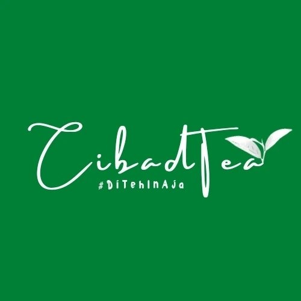

Nama: Deni Gentar Candana
Pekerjaan: Bartender
Tempat Kerja: Cibadtea

Periode Kerja: 2023 -
Sebagai bartender di Cibadtea, tugas saya adalah:
Periode Kerja: 2022 - 2023
Saya bekerja sebagai barista di Cinta Abadi Kopi selama satu tahun. Berikut adalah tanggung jawab yang saya jalankan selama periode tersebut:
Jl. Raya Bayah - Cikotok KM. 01, Tenan Alfamidi Bayah, prov, Banten